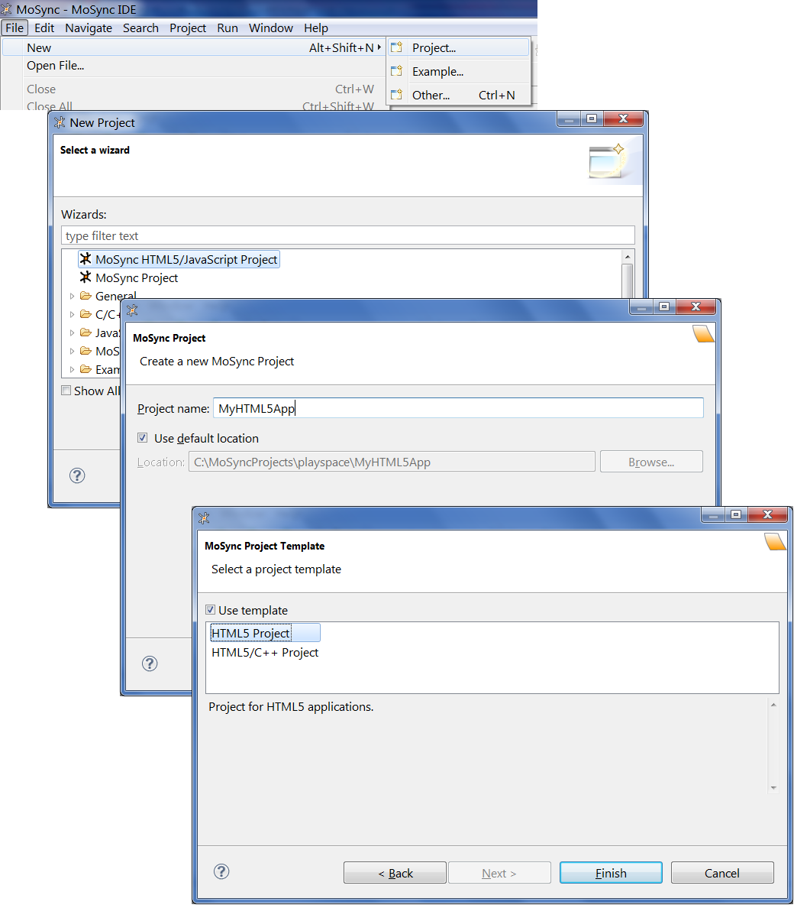
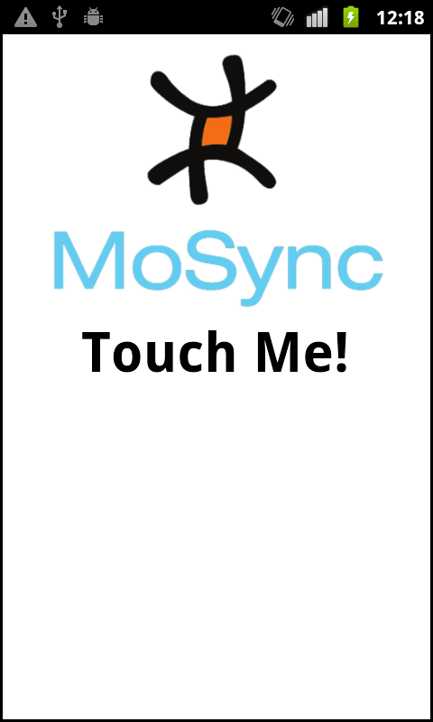
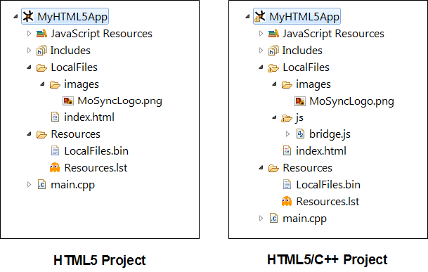

This document outlines how to create a project where you can author mobile applications using HTML5 and JavaScript.
MoSync has a native widget system, and one of the widget types is the WebView widget. This means you can use web technologies to create your application.
New in MoSync 2.7 is full support for HTML5 applications. This means that you can create a native application in HTML/CSS/JavaScript, and deploy it to the app stores as a stand-alone appliction. You can use established web standards and JavaScript libraries, such as jQuery and jQTouch, and reuse your current web-based code.
You can code your entire application using HTML/CSS/JavaScript, or you can mix web technologies with C++, using the MoSync C/C++ API to access device functionality not avaiable in HTML5. Depending on which langauges and libraries you wish to use, you can write all or most of the application logic in JavaScript, or you can write the application logic in C/C++ and use HTML/CSS for the user interface of the application.
To get started, open the MoSync IDE, select File/New/Project and create an HTML5/JavaScript project, as presented in the follwing screenshots:

This will give you an HTML5 project which is ready to build and run. You don't need to write a single line of C++ if you choose this option.
If you should need to access code written in C++ from JavaScript, you should create a project using the template "HTML5/C++ Project". The difference between an "HTML5 Project" and an "HTML5/C++ Project" is that the latter is set up support communication between JavaScript and C++.
This is how the application looks when running. The text will change when you touch the screen, and in the HTML/C++ template application, the device will also vibrate.

Note that you can manually add the code neeed for JavaScript/C++ interaction to a plain HTML5 Project, in case you wish to add functionality that requires you to code in C++ (for example, to access native device functionality not implemented by the WebView browser).
An HTML5 project has a directory called "LocalFiles". This is where you should put your HTML/CSS/JavScript/media files.
Here are the technical details. The content of LocalFiles is packaged by a build step called "Bundle", to a file called LocalFiles.bin in the Resources directory. In Resources, there is a file called Resources.lst, which includes LocalFiles.bin. At runtime, when the application is launched, this file is unpacked and the contents are copied to the application's local file system on the device.
This is the file system layout you will get when creating a template project (note that LocalFiles.bin won't be created until you actually build the project):

The difference between the two template projects, is that the HTML5/C++ project contains a file called "bridge.js", which provides support for communicating between JavaScript and C++.
The main.cpp file contains code that creates a WebAppMoblet. This type of moblet is designed to be used for web applications that feature one WebView widget.
In the case of a plain HTML5 project, you don't need to touch anything in main.cpp.
If you want to provide functionality that invokes C++ code from JavaScript, you can edit main.cpp to add that functionality. The sample template application has code that makes the device vibrate when the screen is touched. How this is done is explained in the document How to communicate between JavaScript and C++ in MoSync.
[To be written. Is there a tutorial for this?]